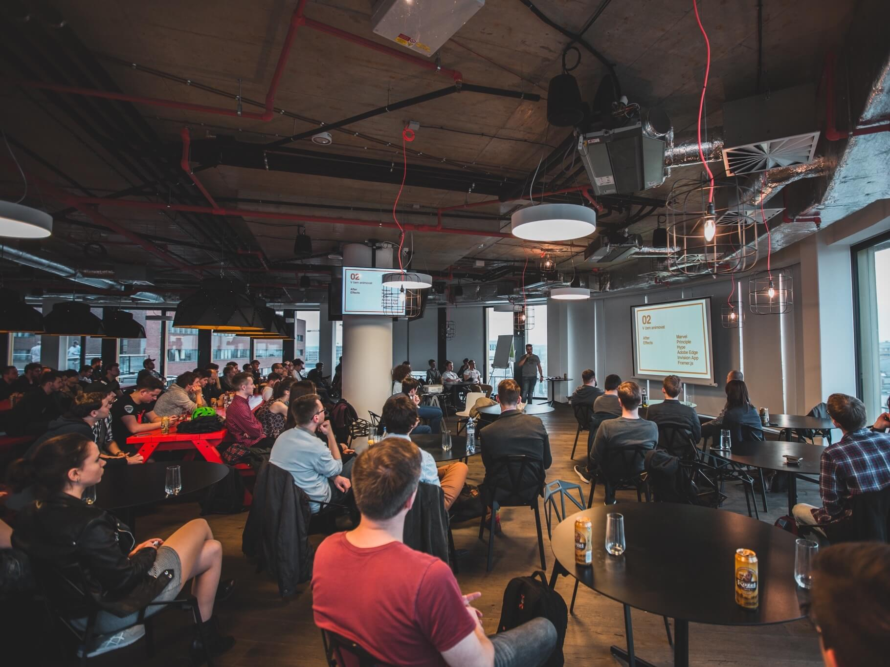

Hey Intercom.
My name is Marek.
I want to join your team.
I want to join your Product Design team as an intern. I can jump on the plane to Dublin on 10th of June and help you for 4 months.
I graduade in May 2018 so if you will like my work I would be more than happy to join fulltime!
Got 55 seconds to spare to watch the video I’ve made for you?
This video was made for Emmet, Director of Product Design.
Cool things I've done.

Last summer I interned at Shopify.

My site was featured on YC Hacker News twice.

I’ve organized two Dribbble meetups.
One in Prague and another in Ottawa with over 300 attendees altogether.
“Marek is a highly motivated individual with a diverse skill set.”
Vivienne Kay, Designer at Shopify
Let my work speak out on my behalf.
Since some of the stuff I have worked on has not been published yet, I will be happy to share it with you privately via e-mail.
Why I want to intern
- I’m not a superhero or an unicorn. But I learn fast and I want to become a better Product Designer.
- I love your company culture and the way you communicate with outside world (books, podcast…).
- In the future I would like to make a transition to Product Management. Where can I learn how to be a good PM than in the place where product management evolved?
- We share the same values.
I can benefit your team by
- Working on ideas that have high priority and need more resources.
- Bringing a fresh pair of eyes. See the things from different point of view.
- Bringing more code talent into a team.
- And finally - introducing you to Slovak culture. For instance, do you know how to pronounce “čučoriedky”?